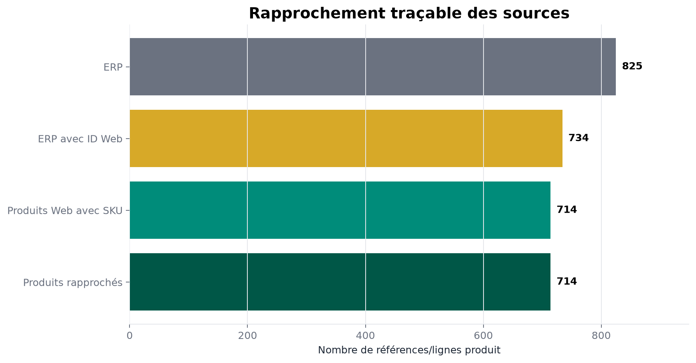

01 · Python
BottleNeck — fiabiliser trois sourcesBottleNeck — reconcile three sources
714 produits rapprochés, contrôles de jointure et analyse commerciale reproductible.714 reconciled products, controlled joins and reproducible business analysis.
Voir l’étude de cas détaillée →View detailed case study →